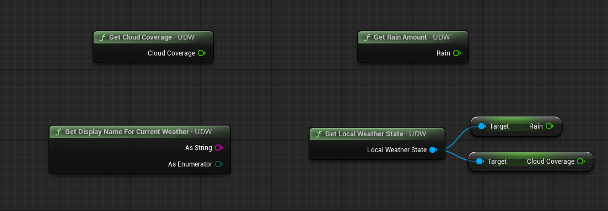
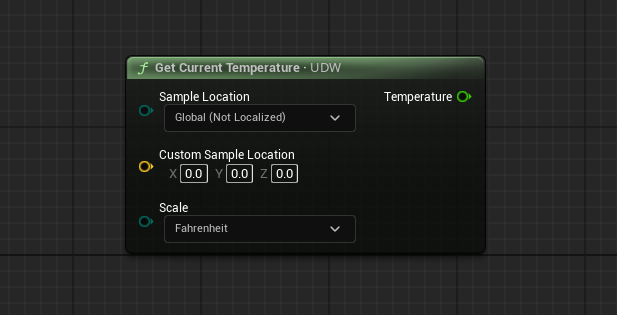

声音、采样与风
天气音效与遮挡、可自制的环境声系统、从蓝图采样天气与温度、事件分发器、Actor 天气状态组件，以及风向、阵风与风力。
天气音效
UDW 默认开启风、雨、雷三类音效。在 Sound Effects 分类里可以整体关闭，或分别调整音量；
最终音量同时受这些设置与当前天气状态缩放。
运行时想改变哪些声音开启，官方建议保持音效总开关开启，改为在运行时设置各自暴露的
Volume 变量。需要一次性全关时，调用 Set Enable Weather Sound Effects。
同一分类里还能调雷声相对于闪电的延迟：默认几乎无延迟，用
Close Thunder Delay Per KM 可以模拟真实的声速延迟。
UDW 的所有音效使用声音类 UDS_Weather。建议把该类作为你项目 Sound Effects 声音类的子类，
这样天气声就会受到整体音效混音的影响。
声音遮挡
UDW 默认带一套简单的遮挡系统：定期从相机位置发射射线，当玩家处在封闭空间时降低音量、压低低通滤波频率（让声音更闷）。
该行为可在 Sound Occlusion 分类里关闭或调整。
具体“有多封闭”由 UDS 的 Player Occlusion 系统计算，参数在 UDS 的 Player Occlusion 分类。
需要强制某些空间始终算作封闭时，放入 UDS Occlusion Volume；
Player Occlusion 里的 Occlusion Sampling Mode 决定是否采样这些体积。
还有一个 UDS Occlusion Portal 组件：放在遮挡采样点附近时会被射线检测，
若射线未被阻挡，它可以抵消遮挡。典型用法是给打开的门、窗各放一个，让外面的天气声更自然地传进室内。
想让关卡里自己的音源也受这套遮挡衰减影响，把它的声音类设为 UDS Outdoor Sound。
环境声（Environment Sound）
除了天气音效，UDW 还有一套环境声系统，用来播鸟鸣、虫声、城市底噪这类户外氛围声。 它能随时间与天气变化，也参与声音遮挡。
在 Sound Effects 分类里选择一个环境声资产即可。资源里带了一个森林氛围的示例，
系统本身是为“自己制作”设计的。
制作环境声资产
环境声是数据资产，类型为 UDS_Environment_Sound：在内容浏览器新建该类型的数据资产。
它主要指向一个 MetaSound Source 资产，另外有音量缩放与 MetaSound 参数覆盖。
制作对应的 MetaSound Source
| 要求 | 说明 |
|---|---|
| 输出格式为 5.1 | 只有 5.1 才能同时获得声音遮挡与四方向立体声定位。六个声道的含义见下表。 |
| 输出到天气总线 | Source 设置里打开 Enable Bus Sends、关闭 Enable Base Submix，
然后加一个 Post-Effect Bus Send，输出到音频总线 UDS_Weather_AudioBus。 |
| 五个输入参数 | 三个整数参数 Time、Weather、Wind，两个时间参数
Weather Interp、Time Interp。UDW 会负责设置它们。 |
5.1 六个声道的约定：
| 声道 | 含义 |
|---|---|
| 0 Front Left | 来自 -X 方向的定向声 |
| 1 Front Right | 来自 +X 方向的定向声 |
| 2 Front Center | 来自 -Y 方向的定向声 |
| 3 Low Frequency | 来自 +Y 方向的定向声 |
| 4 Side Left | 全局声左声道 |
| 5 Side Right | 全局声右声道 |
定向声按听者朝向做空间化，并按方向做遮挡；全局声当作普通立体声，使用全局遮挡。
MetaSound 里可以用 UDS_TimeWeather_VolumeManager 与 UDS_DayNight_VolumeManager
两个节点，传入上面的参数，用数组配置“某时段/某天气/某风力下应该是多少音量”。
具体接法参考自带的 Forest Example。
运行时切换
在 UDW 上选中环境声资产，即设定 Begin Play 时播放哪个。运行时切换用
Change Environment Sound：可以启动一个原本没在播的环境声、从一个换到另一个，
或不传参数调用以停止环境声。
采样天气状态
在自己的蓝图里读取天气状态，用蓝图函数库里的各个 Get 函数：Get Cloud Coverage、
Get Wind Intensity 等，每一项都能单独取。
也可以取到 Local Weather State 对象（同样通过 Get 函数，或直接从 UDW 引用上取），
它是一个天气设置对象，包含当前驱动特效与天空的天气状态。
只需要“当前是什么天气”这种文字描述（如 Light Rain、Blizzard）时，调用
Get Display Name for Current Weather。

温度
Get Current Temperature 返回当前温度，可选择华氏或摄氏。温度是由天气推导出来的，
反过来不成立。计算过程大致是：
- 从 0 开始，按
Temperature分类里各项Temperature Bias累加——这些值依据时间、天气状态等做加减。 - 把结果从 -1–1 的范围映射到当前季节的最小/最大温度区间。
- 叠加一个缓慢变化的随机值，幅度由
Randomize Temperature缩放。 - 如果调用时
Sample Location不是 Global，还会叠加位置相关效果：采样关卡里的温度体积，并按遮挡程度应用室内温度。

玩家处在天气覆盖体积内时，该体积会应用自己的温度区间；可以在体积设置里调整或关闭这一行为。
Blueprints/Weather_Effects 下的 Temperature Volume 可以在关卡里局部改变温度：
例如在火堆周围放一个、设正的 Temperature Offset，体积内采样到的温度就会更高。
想直接显示温度，用控件 UDW Thermometer（控件设计器的 Ultra Dynamic Sky Widgets 分类）。
事件分发器
| 事件 | 触发条件 |
|---|---|
Started Raining / Finished Raining | 按天气状态里的雨量判定 |
Started Snowing / Finished Snowing | 同上，雪 |
Dust/Sand Forming / Dust/Sand Clearing | 同上，尘 |
Getting Cloudy / Clouds Clearing | 按云量判定 |
Getting Foggy / Fog Clearing | 按雾值判定 |
Weather Display Name Changed | 当前天气显示名变化时触发，适合做“天气整体变了”的统一入口 |
开始/结束类事件的判定阈值在 UDW 的 Event Dispatchers 分类里调整。
另外还有一组 State Change 分发器，用于监听某个具体数值的变化——
例如绑定 State Change - Rain，雨量一变就执行你的逻辑。
Actor 天气状态
Actor Weather Status 组件用来跟踪某个 Actor 暴露在天气中的程度，以及它的温度与风力暴露。
它适合玩家角色这类需要持续监控自身状态的 Actor。
- 运行时通过周期性射线检测暴露程度，并据此推算温度受影响的情况，结果都在组件的
Status分类里。 - 组件自带事件分发器：开始淋雨、开始落雪、温度越过冷/热阈值等。
Material Effects分类里可以挂动态材质实例，组件会写入Wet、Raining、Snowy、Dusty、Wind Intensity五个 0–1 参数。UDW 的材质函数里有个Use Local Parameters输入，就是配合这套参数用的。
如果只是偶尔查询一次、不需要持续跟踪，可以调用 UDW 的 Test Actor for Weather Exposure：
把 Actor 自身作为输入，函数输出雨、风、雪、尘四个 0–1 的暴露值，
数值同时受天气强度与遮挡程度影响（例如雪的值为 1 表示完全暴露在最大强度的雪中）。
风
风向
风向独立于天气状态控制：由 Basic Controls 里的 Wind Direction 与
Wind Direction 分类里的设置决定。除了吹动天气粒子，它也接管 UDS 上云的移动方向。
分类里可以开启 Wind Direction Variation，用随机噪声让风向在运行时围绕设定值漂移。
天气覆盖体积也能覆盖风向：体积上勾选 Apply Wind Direction 后，玩家进入时使用体积设置的方向。
风中的碎屑
Wind Debris 在风力较高时往空中加飞行的碎屑粒子。可以调数量、大小与精灵贴图
（替换贴图时必须是 4x4 的帧图集，带 alpha 通道）。碎屑的生成与碰撞行为沿用
Shared Particle Settings。运行时可以改 Wind Debris Particle Spawn Count，粒子会即时更新。
阵风
默认情况下风力本身带一层扰动，模拟阵风：一条 Perlin 噪声流把风力推高推低。
在 Wind Gusts 分类里可以调扰动幅度与噪声流的速度。
风向源组件
引擎的 Wind Directional Source 会影响布料、SpeedTree 等。UDW 默认会自动创建并控制一个这样的组件，
把当前风速风向写进去。相关选项在 Wind Directional Source 分类：可以缩放写入的风速，
也可以设置“室内时风速归零”。
物理风力
Wind Physics Force 组件可以让参与物理模拟的物体被风吹动：把它挂在任何模拟物理的 Primitive 组件下，
运行时会查询当前风状态，并用射线判断该组件的受风程度，再施加力。
力的强度与组件行为细节都在暴露的设置里。
风力镜头抖动
Wind Camera Shake 分类里可以开启“最大风力时相机抖动”，调整抖动幅度，
以及触发抖动的风力区间。抖动会被全局遮挡遮罩屏蔽——玩家在室内时不会抖，
判定依据是 UDS 的 Player Occlusion 设置。